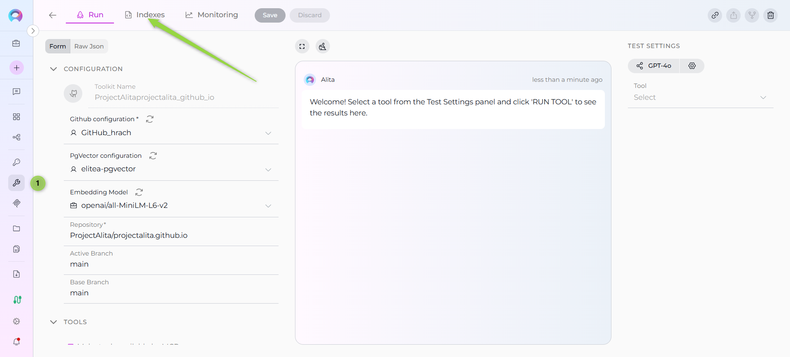
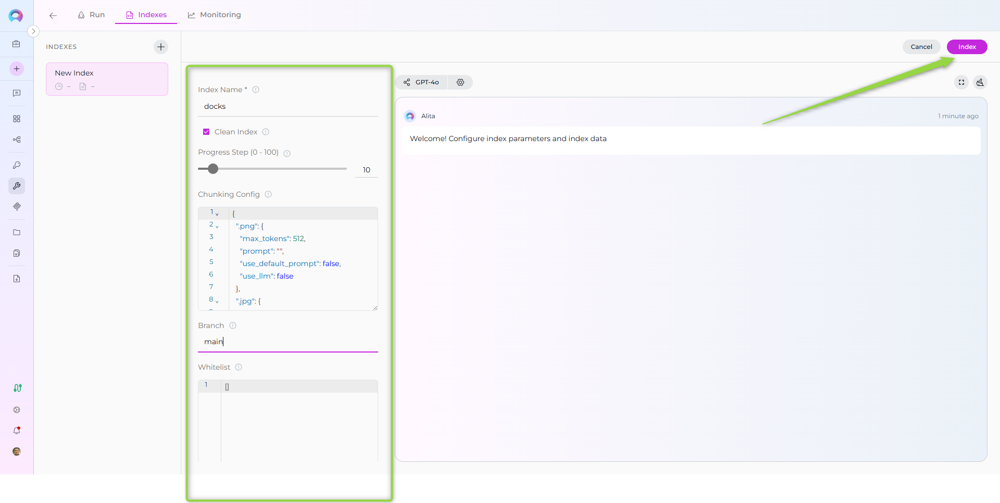
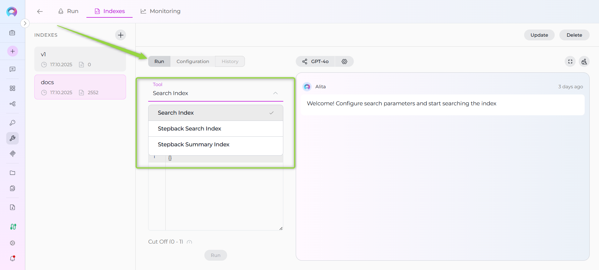
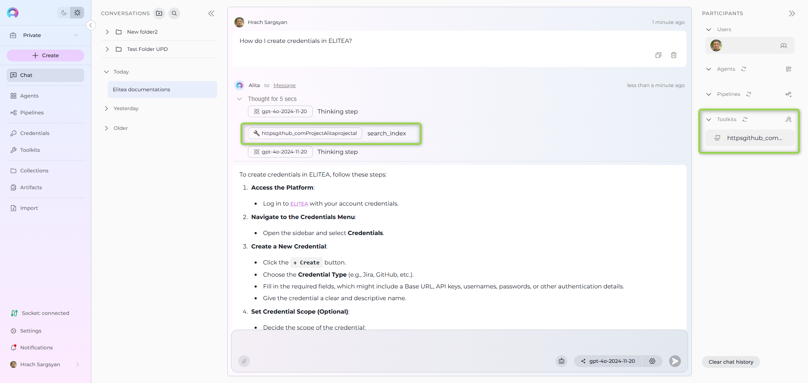

Index Repository Data¶
Availability
Indexing tools are available in the Next environment (Release 1.7.0) and replace legacy Datasources/Datasets. For context, see Release Notes 1.7.0 and the Indexing Overview.
This guide provides a complete step-by-step walkthrough for indexing repository data and then searching or chatting with the indexed content using ELITEA's AI-powered tools.
Primary Interface
Indexing operations are performed through the Indexes interface within Toolkit Configuration. This interface provides comprehensive index management with visual status indicators, real-time progress monitoring, and integrated search capabilities. For detailed information, see How to create and use indexes.
Repository Support:
This guide is applicable to all supported repository platforms:
- GitHub - Git repository hosting and DevOps platform
- Azure DevOps Repos - Microsoft's Git repository hosting
- Bitbucket - Atlassian's Git and Mercurial repository management
- GitLab - DevOps platform with integrated Git repository management
- Other Git-based platforms - Any Git repository accessible via standard protocols
Overview¶
Repository indexing allows you to create searchable indexes from various repository resources:
- Repository Content: Code files, documentation, configuration files, and project assets
- Issues & Discussions: Bug reports, feature requests, support tickets, and community discussions
- Pull Requests: Code reviews, change proposals, and development conversations
- Project Workflows: GitHub Actions logs, workflow configurations, and CI/CD data
- Organization Data: Team repositories, project structures, and collaborative content
What you can do with indexed repository data:
- Semantic Search: Find code patterns, documentation, or discussions using natural language queries
- Context-Aware Chat: Get AI-generated answers from your repository content with citations
- Cross-Repository Discovery: Search across multiple repositories and project resources
- Development Insights: Analyze issues, PRs, and workflows for project intelligence
- Knowledge Extraction: Transform repository content into searchable organizational knowledge
Common use cases:
- Onboarding new team members by allowing them to ask questions about the codebase and processes
- Finding specific implementations, bug fixes, or feature discussions across repositories
- Generating documentation or explanations from existing code and project discussions
- Code review assistance and impact analysis using historical PR data
- Support ticket resolution using indexed issue discussions and solutions
GitHub Example Walkthrough¶
GitHub as Primary Example
The following sections demonstrate the complete indexing workflow using GitHub as the example repository platform. This includes:
- Creating GitHub credentials
- Configuring GitHub toolkit
- Indexing GitHub repository data
- Searching and using the indexed content
For other repository platforms (Azure DevOps, Bitbucket, GitLab), the process is identical - simply replace "GitHub" with your platform name and use the appropriate credential type and toolkit.
Prerequisites¶
Before indexing GitHub data, ensure you have:
- GitHub Credential: A Personal Access Token or GitHub App credentials configured in ELITEA
- Vector Storage: PgVector selected in Settings → AI Configuration
- Embedding Model: Selected in AI Configuration (defaults available) → AI Configuration
- GitHub Toolkit: Configured with your repository details, credentials, and Index Data tool enabled
Requirements
The Indexes interface requires: - PgVector and Embedding Model configured at the project level - The Index Data tool enabled in your toolkit configuration
Complete both project-level setup and toolkit configuration to access indexing functionality.
Required Permissions¶
Your GitHub credential needs these minimum scopes based on what you want to index:
For Repository Content:
- repo or public_repo (for public repositories)
- repo:status (for commit status access)
For Issues & Pull Requests:
- repo (includes issue access)
- read:org (for organization-level content)
For GitHub Actions & Workflows:
- actions:read (for workflow data)
- repo (for repository-level workflows)
Step-by-Step: Creating a GitHub Credential¶
- Generate GitHub Personal Access Token in GitHub with required scopes (
repo,public_repo,repo:status, etc.) - Create Credential in ELITEA: Navigate to Credentials → + Create → GitHub → enter token and save
Detailed Instructions
For complete credential setup steps including token generation and security best practices, see:
- Create a Credential
- GitHub Credential Setup
- GitHub Toolkit Guide (Token generation section)
Step-by-Step: Configure GitHub Toolkit¶
- Create Toolkit: Navigate to Toolkits → + Create → GitHub
- Configure Settings: Set repository (
owner/repo-name), branches, and assign your GitHub credential - Enable Required Tools: Select
index_datatool (required for indexing functionality) and optionallysearch_index,stepback_search_index,stepback_summary_index, andremove_indextools - Save Configuration
Required Tool
The Index Data tool must be enabled for indexing functionality to be available. Without this tool, you cannot access the indexing interface.
Tool Overview:¶
- Index_data: Creates searchable indexes from GitHub repository content (files, documentation, code) - Required for indexing
- Search_index: Performs semantic search across indexed content using natural language queries
- Stepback_search_index: Advanced search that breaks down complex questions into simpler parts for better results
- Stepback_summary_index: Generates summaries and insights from search results across indexed content
- Remove_index: Deletes existing collections/indexes when you need to clean up or start fresh
Detailed Instructions
For complete toolkit configuration including PgVector setup and embedding models, see:
Step-by-Step: Index GitHub Data¶
Step 1: Access the Interface¶
- Navigate to Toolkits: Go to Toolkits in the main navigation
- Select Your GitHub Toolkit: Choose your configured GitHub toolkit from the list
- Open Indexes Tab: Click on the Indexes tab in the toolkit detail view
If the tab is disabled or not visible, verify that: - PgVector and Embedding Model are configured in Settings → AI Configuration - The Index Data tool is enabled in your toolkit configuration

Step 2: Create a New Index¶
- Click Create New Index: In the Indexes sidebar, click the + Create New Index button
- New Index Form: The center panel displays the new index creation form

Step 3: Configure Index Parameters¶
Fill in the required and optional parameters for your GitHub repository:
| Parameter | Description | Example Value | Required |
|---|---|---|---|
| Index Name | Suffix for collection name (max 7 chars) | docs or code |
✓ |
| Branch | Git branch to index (leave empty for default branch) | main, develop, or empty |
✗ |
| Whitelist | File extensions/paths to include | ["*.md", "*.py", "*.js", "*.yml"] |
✗ |
| Blacklist | File extensions/paths to exclude | ["*.png", "*.jpg", "node_modules/*", ".git/*"] |
✗ |
| Clean Index | Remove existing index data before re-indexing | ✗ (checked) or ✗ (unchecked) | ✗ |
| Progress Step | Progress reporting interval | 10 (default) |
✗ |
| Chunking Config | Document chunking configuration | {} (default) |
✗ |

Step 4: Start Indexing¶
- Form Validation: The Index button remains inactive until all required fields are filled
- Review Configuration: Verify all parameters are correct
- Click Index Button: Start the indexing process
- Monitor Progress: Watch real-time updates with visual indicators:
- 🔄 In Progress: Indexing is currently running
- ✅ Completed: Indexing finished successfully
- ❌ Failed: Indexing encountered an error
Step 5: Verify Index Creation¶
Once indexing completes:
- Check Index Status: Verify the index shows ✅ Completed status in the sidebar
- Review Index Information: Click on your index to see:
- Document Count: Number of indexed files
- Last Updated: Timestamp of indexing completion
- Index Name: Your specified collection suffix

Using Search Tools with Indexed Data¶
Once your GitHub data is indexed, you can search and interact with it directly through the interface:
Accessing Search Functionality¶
- Select Your Index: Click on your completed index from the sidebar
- Navigate to Run Tab: Click the Run tab in the center panel
- Choose Search Tool: Select from available search tools in the dropdown:
- Search Index: Basic semantic search across indexed content
- Stepback Search Index: Advanced search that breaks down complex questions
- Stepback Summary Index: Search with automatic summarization of results

Running a Search¶
- Enter Your Query: Type your search query (e.g., "How to configure GitHub credentials?")
- Configure Parameters: Adjust optional settings like filters and model configuration
- Click Run: Execute the search
- View Results: Results appear in the integrated chat interface on the right panel

Using Indexed Data in Conversations and Agents¶
Once your GitHub data is indexed, you can use the toolkit to search and interact with your content in multiple ways:
Using Toolkit in Conversations and Agents¶
Your GitHub toolkit can be used in two main contexts:
- In Conversations: Add the toolkit as a participant to ask questions and search your indexed GitHub data
- In Agents: Include the toolkit when creating AI agents to give them access to your GitHub knowledge base
How to use:
- Start a New Conversation or Create an Agent
- Add Toolkit as Participant: Select your GitHub toolkit from the available toolkits
- Ask Natural Language Questions: The toolkit will automatically search your indexed data and provide relevant answers with citations
Real-Life Example Workflow¶
Let's walk through a complete example of indexing and using the ELITEA documentation repository:
Step 1: Setup GitHub Toolkit for projectalita.github.io
Configure GitHub Toolkit with:
- Repository: projectalita/projectalita.github.io
- Branch: main (leave empty for default)
- Credential: Your GitHub Personal Access Token
- Tools enabled: index_data (required), search_index, stepback_search_index, stepback_summary_index, remove_index
Step 2: Index the Repository
- Navigate to Toolkits → Select your GitHub toolkit → Click Indexes tab
- Click + Create New Index button
- Configure indexing parameters:
- Index Name (Collection Suffix):
docs - Branch: (empty - uses main branch)
- Whitelist:
["*.md"] - Blacklist:
["*.png"] - Clean Index: ✓ (checked)
- Click Index button to start indexing
- Monitor progress with visual indicators (🔄 In Progress → ✅ Completed)
Step 3: Verify Index Creation
Check that your index appears in the sidebar with:
- ✅ Completed status
- Document count showing number of indexed markdown files
- Collection name: projectalita_projectalita_github_io_docs
Step 4: Test Search Functionality
- Select your completed index from the sidebar
- Click the Run tab in the center panel
- Choose Search Index from the tool dropdown
- Enter a test query: "How do I create credentials in ELITEA?"
- Click Run and review results in the chat interface
Step 5: Use in Conversations
- Navigate to Conversations → + New Conversation
- In the participants section, click + to add your GitHub toolkit
- Start asking questions about your indexed content
Example Conversation:
User: "How do I create credentials in ELITEA?"
GitHub Toolkit: "Based on your indexed documentation, here are the steps to create credentials:
- Navigate to Credentials → + Create
- Select the credential type (GitHub, Jira, etc.)
- Enter the required authentication details..."

Troubleshooting & Tips¶
Common Errors and Solutions¶
Troubleshooting & Tips¶
Common Issues and Solutions¶
"Indexing interface not visible" or "Tab disabled": - Verify PgVector and Embedding Model are configured in Settings → AI Configuration - Ensure the Index Data tool is enabled in your GitHub toolkit configuration - Check that your toolkit supports indexing (GitHub is supported) - Refresh the browser page and retry
"+ Create New Index button not working": - Verify all project-level prerequisites are met (PgVector and Embedding Model) - Check that you have proper permissions for the toolkit - Ensure the toolkit is properly saved with credentials
"Repository not found" or "Authentication failed":
- Verify your GitHub credential has the correct token
- Ensure the repository name format is owner/repository
- Check that your token has appropriate permissions for the repository
"Index creation failed" or "Indexing stuck in progress": - Check your whitelist/blacklist patterns aren't too restrictive - Verify the repository has files matching your whitelist - Try indexing with broader patterns first, then add restrictions - Monitor the progress indicators for specific error messages
"No search results returned": - Verify the index shows ✅ Completed status - Check that your search query matches the type of content indexed - Try broader search terms or different search tools (Stepback Search, Stepback Summary) - Ensure the indexed content contains relevant information
Performance and Scope Considerations¶
Performance and Scope Considerations¶
For Large Repositories:
- Use specific whitelist patterns: ["docs/*.md", "src/*.py"]
- Exclude binary files: ["*.png", "*.jpg", "*.zip", "*.exe"]
- Consider indexing specific directories: ["docs/*", "README.md"]
- Monitor the progress indicators and document count during indexing
Search Result Quality: - Use natural language queries rather than exact keyword matches - Try different search tools for complex questions (Stepback Search, Stepback Summary) - Leverage the integrated chat interface for follow-up questions - Create separate indexes for different content types (docs vs code vs configs)
Index Management Best Practices:
- Use descriptive collection suffixes (docs, code, main, v1)
- Enable the Clean Index option when re-indexing to ensure fresh data
- Monitor index status regularly through the visual indicators
- Use the Update button for incremental updates when repository content changes
- Delete unused indexes using the Delete button to free up resources
Content-Specific Indexing Tips¶
For Documentation:
- Index README files, wiki content, and inline code documentation
- Include changelog and release notes for version-specific information
- Use whitelist patterns like ["*.md", "docs/**", "README*"]
For Code Analysis:
- Include source code files with patterns like ["*.py", "*.js", "*.java"]
- Consider excluding test files if focusing on production code
- Include configuration files for deployment and setup guidance
For Configuration Management:
- Index deployment configs, CI/CD pipelines, and environment settings
- Be careful to exclude sensitive data (secrets, keys, credentials)
- Use patterns like ["*.yml", "*.yaml", "*.json", "*.toml"]
References¶
Related Documentation
For additional information and detailed setup instructions, see:
- Indexing Overview - General indexing concepts and features
- How to create and use indexes - Comprehensive guide for indexing functionality
- Create first Index - Quick start guide for creating indexes
- Create a Credential - Step-by-step credential creation guide
- How to Use Credentials - Credential management and GitHub setup
- Toolkits Menu - Toolkit configuration and management
- GitHub Toolkit Integration Guide - Complete GitHub toolkit reference
- AI Configuration - Vector storage and embedding model setup
- Chat Menu - Creating conversations and adding toolkit participants